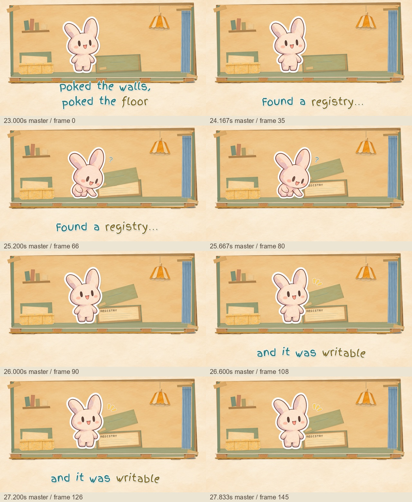
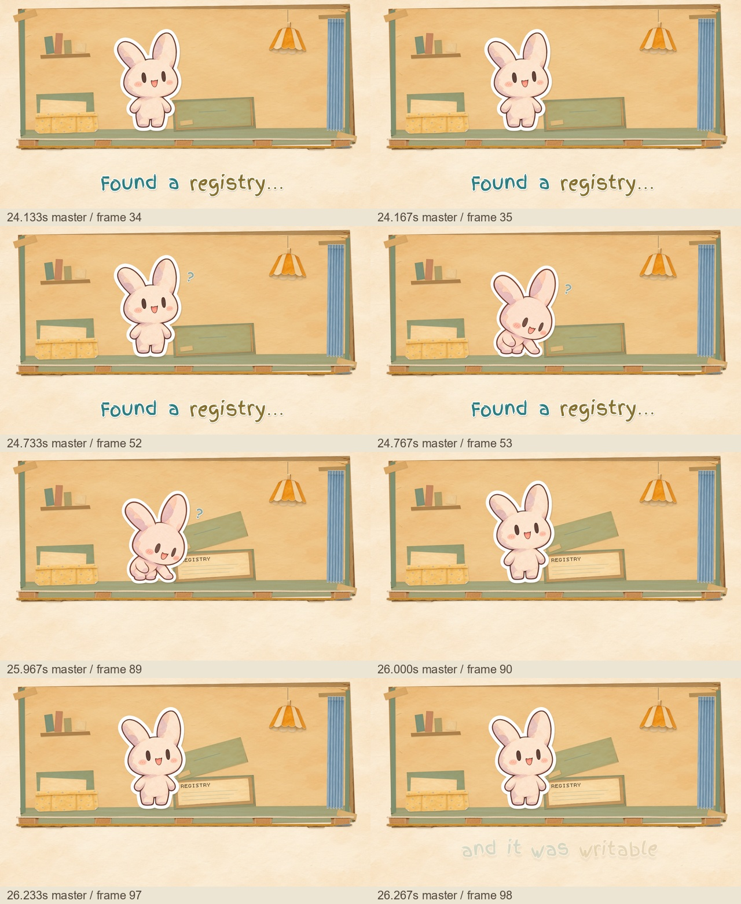

Final-quality candidate · Agent407 · master23–27.8667s · 1080p / 30fps
The independent art critic found no remaining must-fix static-art issues after revision. Final visual and playback approval remains with Leo.
Critic findings · Reproduction and provenance · Technical checks
Includes the next note beat. Its ending enters the next approved caption transition; use the primary cut above to judge the complete discovery beat.

